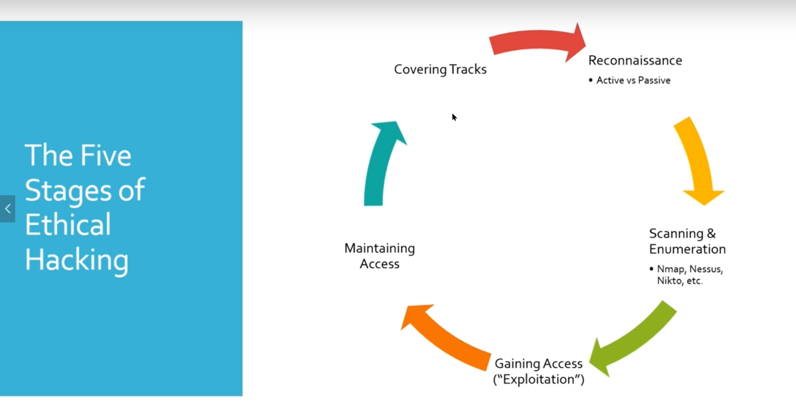

Reconnaissance:
there are two type information gathering.
Passive : everything you don't touch directly relevant systems networks etc. is passive information gathering. Such as search on google or may be twitter pages, linkedin, maybe that is a picture of an employee or badge of company etc.
Active: we scan directly the system or network. we can search open ports, vulnerabilities etc. in here we use tools -nmap etc.- that section also falls into scanning & enumeration.
what returns in that active section we also perform enumeration. With this returns items we research vulnerabilities according to version for example.
Gaining Access: we will run exploit against the client or against the vulnerable service or whatever it may be to try to gain accessinto a machine or into a network into an environment etc.
Once we have that access the process starts to repeat.
We do scanning an enumeration again and we also want to maintain that access.
Maintaining Access:
So if we were to get kicked out OK or a user shuts down their computer how do we maintain that access
and when they turn their computer back on we still have access to it.
Covering Tracks:
And then lastly there is the covering tracks.
You want to delete any logs that you may leave behind you want to delete any kind of malware that you upload which is more important as a pen tester.
Any accounts that you create for any reason you wanted delete those as well. You really just want to clean up is a good way of putting it.
Covering tracks is the more hacker way of putting it.
Note : Regardless if you're doing network if you're doing web app or if you're doing a different type of assessment it's all similar in this five stages of hacking.
The tools might change the attack methods might change but the overall methodology is always the same.